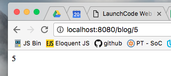
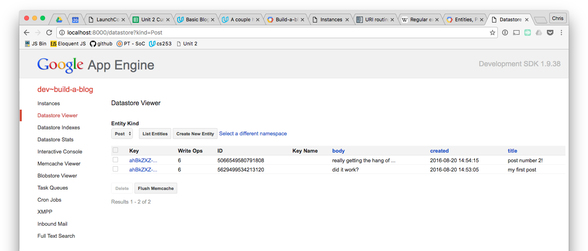

Assignment: Build-a-blog
This assignment will closely follow Problem Set 3 from CS253. We'll provide more structured guidance than the problem set overview at Udacity, which is rather brief. So while you may find the overview useful, you only need to follow the instructions given here.
Note: As with other problem sets for the Udacity course, an instructor's solution is provided within the course. If you are tempted use the provided solution as a shortcut to finishing this assignment, consider the following:
- The instructor's solution uses several concepts we haven't learned yet, so not only will significant parts of it not make sense to you, but we'll easily be able to tell that you didn't write the code yourself.
- We'll know if you copy the code from the instructor's solution, even if you go to pains to change parts of it. We're quick detectives when it comes to this kind of thing. We've provided a detailed guide below, covering the most difficult parts of the problem set. Let us be your guide, and you'll learn the material well without undue struggle.
Throughout the assignment, refer to the demo app.
Setting up
Create a new Google App Engine app called build-a-blog, and then set up a local Git repository and a remote repository on GitHub. See Hello Google App Engine for a refresher on that process.
List and Create Blog Posts
If you think about it for a minute, the behavior of creating a blog post with a title and body, saving it to the database, and displaying posts is essentially what we did in the AsciiChan example app. The main difference between the two is that the post submission form and post listings will be on separate pages. Go back to your code for AsciiChan and use it as a model to set up the beginnings of your blog.
First, set up the blog so that the new post form and the post listing are on the same page, as with AsciiChan, and then separate those portions into separate routes, handler classes, and templates. For now, when a user submits a new post, redirect them to the main blog page.
Make sure you can say the following about your app:
- The
/blogroute displays the 5 most recent posts. To limit the displayed posts in this way, you'll need to filter the query results. - You have two templates, one for each of the main blog and new post views. Your templates extend a
base.htmltemplate which includes some boilerplate HTML that will be used on each page, along with some styles to clean up your blog's visuals a bit (you can copy/paste the styles from the AsciiChan exercise). - You're able to submit a new post at the
/newpostroute/view. After submitting a new post, your app displays the main blog page. Note that, as with the AsciiChan example, you will likely need to refresh the main blog page to see your new post listed. - If either title or body is left empty in the new post form, the form is rendered again, with a helpful error message and any previously-entered content in the same form inputs.
When you can check each of these off, you're ready to dive in to the next step. Nice work!
Display Individual Entry
There are a few more behaviours that we need to implement. We'll go into details on each of these below.
- Display a single blog post. When a URL of the form
/blog/[id](e.g./blog/42) is requested, display the post with thatid. Recall that every entity in the Google App Engine Datastore has a unique numeric ID; it's this ID that we're referring to here. A URL of this form is often referred to as a permalink. - After a new post is created, redirect to the page for that post.
- On the main blog page, the title of a post links to its permalink.
Display a single post
Let's break this up into steps. First, we'll set up the route.
For each post, it would be unreasonable to create a new route just for that post. For example, for a post with an id of 6, we'd have to set up the route ('/blog/6', SomeHandler), and then the SomeHandler class would either be built to always display the post with id equal to 6, or it would have to somehow know which id we were asking for, and it's not clear how that id would be passed to the handler's get method. Furthermore, if we had 1000 blog posts, we'd have to create 1000 additional routes! Sounds like a drag.
You might be thinking that we haven't learned how to create such "dynamic" routes, and you'd be right. Let's learn how to do it now.
The Python web application frameowork we're building our applications within, webapp2, has some utilities for creating more complex routing scenarios. In our situation, we can set up a route like this:
webapp2.Route('/blog/<id:\d+>', ViewPostHandler)You can put this route next to your other routes in main.py. Note the use of the webapp2.Route class to enable this new behavior.
This bit of code says that our route expects a URL path that starts with /blog/ and ends with one or more digits (i.e. 0-9), and that we want to refer to the numeric portion as id. The \d+ portion of the route is what specifies that we want one or more digits (\d means digit, + means "at least one"), and is an example of a regular expression. Regular expressions pop up all over programming, and while they can seem intimidating at first, they're incredibly useful. Read a bit more about them, if you're curious, and expect to see them again.
Then, we can create our handler like this:
class ViewPostHandler(webapp2.RequestHandler):
def get(self, id):
pass #replace this with some code to handle the requestThis routing technique allows for dynamic routing, so that a GET request that looks like /blog/6 is mapped to the ViewPostHandler and the id value 6 is passed into its get method. Note that the name of the id parameter in the get method matches the name that we gave the dynamic portion of the route above. If these don't match up, the value of the id won't be passed to the get method properly.
You can read more about complex routing in the webapp2 documentation.
Once you have set up this new dynamic route, and the corresponding handler and get method, you are ready to do a simple test. In the get method, simply print the value of the id parameter to the response. No need to use a template, or even any HTML, just self.response.write(). Then visit such a route in your browser (e.g. /blog/42). You should see something like this:

If you don't, use any error messages to debug the issue, including those in the GAE logs.
Now you can add code to ViewPostHandler to display a single post. Rather than use a query to fetch the post from the database, you can use Post.get_by_id to retrieve the post. Refer to the GAE documentation on this method. Be sure to check that there actually is a post with the given ID, and if not, display a helpful error message.
In order to test your single post display, you'll need to know the ID of a post that you have created. A handy way to find out this info is to use the GAE console. From the GAE Launcher application, click on the "SDK Console" button. Alternatively, you can go to http://localhost:8000/ in your browser. If your blog app has an Admin Port value other than 8000, use that instead (note that this is the Admin Port, not the regular application port; refer to the GAE Launcher to see the port values you set up for your build-a-blog app). From the GAE console, select "Datastore Viewer" from the menu, and you'll see a list of Post entities that you have created. Use one of the ID values to test your single post view.
For example, with the entities in the screenshot below, you could test using the URL http://localhost:8080/blog/5066549580791808.

Once you have the single post display working in conjunction with the permalinks (i.e. dynamic routes), you can proceed.
Adding permalinks and redirect
Let's go back to our main blog page -- the one that lists every post -- and add permalinks for each post that is displayed. To add a permalink to the post title, you'll only need to alter the template for the main blog display. The command post.key().id() will return the integer ID of the post, where post is a variable holding a Post entity. Use this to create the correct href value for the link.
Next, modify the new post handler so that it redirects to the new post's permalink after the post is created. You'll need to use post.key().id() again. Be careful to only call this command after adding the newly-created post to the database with post.put(). If you don't, you'll get a nasty error.
Hacker Features
This section is optional, and is intended for those looking for an additional challenge. If you decide to tackle these extra challenges, be sure to commit and push your code before diving in, so you have a snapshot of your progress to this point.
As you go, refer to the demo hacker edition app.
Our blog has some great features, but it isn't easy to navigate, as you've probably noticed. Let's fix that.
Navigation
In your base.html template, add some navigation links that link to the blog home, and the new post page.
Pagination
Our main blog page currently only displays the 5 most recent posts. If we have more than 5 posts in our database, nobody will be able to read them!
To fix that, write a new function (outside of any class, but still in main.py), get_posts, looks like this:
def get_posts(limit, offset):
# TODO: query the database for posts, and return themRefer to the aforementioned query filtering reference for help building the query. This function should return a list with at most limit posts in descending order by time created, and it should start with the post in position offset. For example, if there are 8 posts, get_post(5, 5) should return posts 6 through 8, by creation time. get_posts(5, 0) should return the 5 most recent posts.
Then refeactor the handler for your main page to call get_posts with the appropriate parameters. Add code that allows the user to provide a GET query parameter named page that represents that page that they would like to view. When the user requests /blog?page=1 they should see the 5 most recent posts (the same as when /blog is requested), when they request /blog?page=2 the next 5 posts should be displayed, and so on.
Modify your main blog page template to insert navigation links for next and previous pages. These links should only be visible when there is actually a next or previous page. For example, if we have 1 posts, then page 1 should display only a "next" link, page 2 should display both "next" and "previous" links, and page 3 should display only a "previous" link. You may find it helpful to use this snippet, which returns the number of posts in a page that starts at offset and has at most page_size results:
posts.count(offset=offset, limit=page_size)Note that posts.count() returns the total number of entities, not just those queried.
Submitting Your Work
When you are ready to submit, make sure you add, commit and push all the changes you have made, so that your remote repo is up to date with the work you have done locally.
On Vocareum, clone your repository into your work/ folder and then Click submit.
Remember that you should ignore any Udacity instructions about hosting your app out on the internet and posting the link so they can grade it. You don't have to submit your work to Udacity, you just have to submit to LaunchCode on Vocareum.